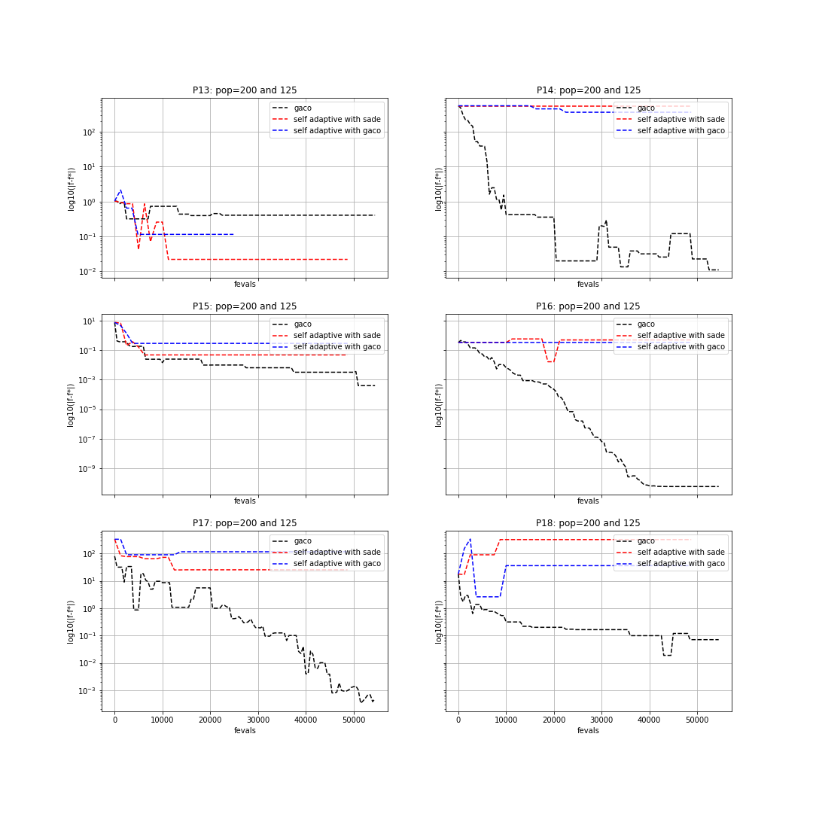

Benchmarking Extended Ant Colony Optimization on CEC2006 problems#
In this tutorial we will show how to use pygmo to run gaco algorithm and benchmark it with the test problem suite used in the
Special Session on Constrained Real-Parameter Optimization, CEC-06, Vancouver, Canada, 17-21 July.
All of the CEC 2006 problems are box-bounded, continuous, single objective constrained problems and are provided as UDP
(user-defined problems) by pygmo in the class cec2006.
We now want to benchmark three user-defined algorithms. Since this is a constrained probelm, we need a UDA (user-defined
algorithm) which can handle constraints. In this respect, we can make use of the pygmo meta-algorithm cstrs_self_adaptive
to allow the use of any UDA for constrained problems. Hence, we will benchmark the extended ant colony optimization algorithm gaco,
with this same algorithm and with the self-adaptive differential evolution algorithm sade, both coupled with a self-adaptive constraints handling technique.
In particular, we will make use of the three aforesaid UDAs on 6 of the 24 CEC2006 problems (namely, problems: 13, 14, 15, 16, 17, 18). The best known fitness for these problems can be found in the technical report: “Problem Definitions and Evaluation Criteria for the CEC 2006 Special Session on Constrained Real-Parameter Optimization”, by J. J. Liang, et al., 2006. In order to run the UDAs on these problems we can write the following piece of code:
>>> import pygmo as pg
>>> #we first save the best known solutions in a vector:
>>> real_minima=[0.0539415140, -47.7648884595, 961.7150222899, -1.9051552586, 8853.5396748064, -0.8660254038]
>>> #we instantiate the problems
>>> problems=[pg.cec2006(13), pg.cec2006(14), pg.cec2006(15), pg.cec2006(16), pg.cec2006(17), pg.cec2006(18)]
>>> for index in range(0,6):
... #we extract the problem of the case:
... udp = problems[index]
... prob = pg.problem(udp)
... #Instantiate pagmo algorithms:
... uda_gaco = pg.gaco(550, 100, 1.0, real_minima[index], 0.0, 200, 7, 10000, 10000, 0.0, False, 23)
... uda_cstrs_sade=pg.cstrs_self_adaptive(40,pg.sade(10, 2, 1, 1e-6, 1e-6, False, 23))
... uda_cstrs_gaco=pg.cstrs_self_adaptive(40,pg.gaco(10, 125, 1.0, real_minima[index], 0.0, 8, 7, 10000, 10000, 0.0, False, 23))
... algo_gaco=pg.algorithm(uda_gaco)
... algo_cstrs_sade=pg.algorithm(uda_cstrs_sade)
... algo_cstrs_gaco=pg.algorithm(uda_cstrs_gaco)
... #Set the seed for reproducibility purposes:
... algo_gaco.set_seed(23)
... algo_cstrs_sade.set_seed(23)
... algo_cstrs_gaco.set_seed(23)
... #Instantiate populations:
... pop_gaco = pg.population(prob, size=100, seed=23)
... pop_cstrs_sade = pg.population(prob, size=125, seed=23)
... pop_cstrs_gaco = pg.population(prob, size=125, seed=23)
... #Set verbosity:
... algo_gaco.set_verbosity(5)
... algo_cstrs_sade.set_verbosity(1)
... algo_cstrs_gaco.set_verbosity(1)
... #Run the evolution:
... pop_gaco=algo_gaco.evolve(pop_gaco)
... pop_cstrs_sade=algo_cstrs_sade.evolve(pop_cstrs_sade)
... pop_cstrs_gaco=algo_cstrs_gaco.evolve(pop_cstrs_gaco)
... #Extract the log:
... uda_gaco=algo_gaco.extract(pg.gaco)
... uda_sa_sade=algo_cstrs_sade.extract(pg.cstrs_self_adaptive)
... uda_sa_gaco=algo_cstrs_gaco.extract(pg.cstrs_self_adaptive)
... #The logs are saved for each problem:
... if (index==0):
... log_gaco_P13=uda_gaco.get_log()
... log_sa_sade_P13=uda_sa_sade.get_log()
... log_sa_gaco_P13=uda_sa_gaco.get_log()
... elif (index==1):
... log_gaco_P14=uda_gaco.get_log()
... log_sa_sade_P14=uda_sa_sade.get_log()
... log_sa_gaco_P14=uda_sa_gaco.get_log()
... elif (index==2):
... log_gaco_P15=uda_gaco.get_log()
... log_sa_sade_P15=uda_sa_sade.get_log()
... log_sa_gaco_P15=uda_sa_gaco.get_log()
... elif (index==3):
... log_gaco_P16=uda_gaco.get_log()
... log_sa_sade_P16=uda_sa_sade.get_log()
... log_sa_gaco_P16=uda_sa_gaco.get_log()
... elif (index==4):
... log_gaco_P17=uda_gaco.get_log()
... log_sa_sade_P17=uda_sa_sade.get_log()
... log_sa_gaco_P17=uda_sa_gaco.get_log()
... elif (index==5):
... log_gaco_P18=uda_gaco.get_log()
... log_sa_sade_P18=uda_sa_sade.get_log()
... log_sa_gaco_P18=uda_sa_gaco.get_log()
In this case, we run gaco using a population of 100 individuals and 550 generations, whereas we run
gaco and sade with cstrs_self_adaptive for 40 iterations with 10 generations
and 125 individuals in the population.
We can now plot the results in a semilog graph with the absolute value of the best fitness minus the
known best fitness in the y-axis and the function evaluations in the x-axis. For doing this, we write the following piece of code:
>>> import matplotlib as mlp
>>> import matplotlib.pyplot as plt
>>> fig, axes = plt.subplots(nrows=3, ncols=2, sharex='col', sharey='row', figsize=(15,15))
>>> axes[0,0].semilogy([entry[1] for entry in log_gaco_P13], [abs(entry[2]-real_minima[0]) for entry in log_gaco_P13],'k--', label = 'gaco')
>>> axes[0,0].semilogy([entry[1] for entry in log_sa_sade_P13], [abs(entry[2]-real_minima[0]) for entry in log_sa_sade_P13],'r--', label = 'self adaptive with sade')
>>> axes[0,0].semilogy([entry[1] for entry in log_sa_gaco_P13], [abs(entry[2]-real_minima[0]) for entry in log_sa_gaco_P13], 'b--', label = 'self adaptive with gaco')
>>> axes[0,0].legend(loc='upper right')
>>> axes[0,0].set_title('P13: pop=200 and 125')
>>> axes[0,1].semilogy([entry[1] for entry in log_gaco_P14], [abs(entry[2]-real_minima[1]) for entry in log_gaco_P14],'k--', label = 'gaco')
>>> axes[0,1].semilogy([entry[1] for entry in log_sa_sade_P14], [abs(entry[2]-real_minima[1]) for entry in log_sa_sade_P14],'r--', label = 'self adaptive with sade')
>>> axes[0,1].semilogy([entry[1] for entry in log_sa_gaco_P14], [abs(entry[2]-real_minima[1]) for entry in log_sa_gaco_P14], 'b--', label = 'self adaptive with gaco')
>>> axes[0,1].legend(loc='upper right')
>>> axes[0,1].set_title('P14: pop=200 and 125')
>>> axes[1,0].semilogy([entry[1] for entry in log_gaco_P15], [abs(entry[2]-real_minima[2]) for entry in log_gaco_P15],'k--', label = 'gaco')
>>> axes[1,0].semilogy([entry[1] for entry in log_sa_sade_P15], [abs(entry[2]-real_minima[2]) for entry in log_sa_sade_P15],'r--', label = 'self adaptive with sade')
>>> axes[1,0].semilogy([entry[1] for entry in log_sa_gaco_P15], [abs(entry[2]-real_minima[2]) for entry in log_sa_gaco_P15], 'b--', label = 'self adaptive with gaco')
>>> axes[1,0].legend(loc='upper right')
>>> axes[1,0].set_title('P15: pop=200 and 125')
>>> axes[1,1].semilogy([entry[1] for entry in log_gaco_P16], [abs(entry[2]-real_minima[3]) for entry in log_gaco_P16],'k--', label = 'gaco')
>>> axes[1,1].semilogy([entry[1] for entry in log_sa_sade_P16], [abs(entry[2]-real_minima[3]) for entry in log_sa_sade_P16],'r--', label = 'self adaptive with sade')
>>> axes[1,1].semilogy([entry[1] for entry in log_sa_gaco_P16], [abs(entry[2]-real_minima[3]) for entry in log_sa_gaco_P16], 'b--', label = 'self adaptive with gaco')
>>> axes[1,1].legend(loc='upper right')
>>> axes[1,1].set_title('P16: pop=200 and 125')
>>> axes[2,0].semilogy([entry[1] for entry in log_gaco_P17], [abs(entry[2]-real_minima[4]) for entry in log_gaco_P17],'k--', label = 'gaco')
>>> axes[2,0].semilogy([entry[1] for entry in log_sa_sade_P17], [abs(entry[2]-real_minima[4]) for entry in log_sa_sade_P17],'r--', label = 'self adaptive with sade')
>>> axes[2,0].semilogy([entry[1] for entry in log_sa_gaco_P17], [abs(entry[2]-real_minima[4]) for entry in log_sa_gaco_P17], 'b--', label = 'self adaptive with gaco')
>>> axes[2,0].legend(loc='upper right')
>>> axes[2,0].set_title('P17: pop=200 and 125')
>>> axes[2,1].semilogy([entry[1] for entry in log_gaco_P18], [abs(entry[2]-real_minima[5]) for entry in log_gaco_P18],'k--', label = 'gaco')
>>> axes[2,1].semilogy([entry[1] for entry in log_sa_sade_P18], [abs(entry[2]-real_minima[5]) for entry in log_sa_sade_P18],'r--', label = 'self adaptive with sade')
>>> axes[2,1].semilogy([entry[1] for entry in log_sa_gaco_P18], [abs(entry[2]-real_minima[5]) for entry in log_sa_gaco_P18], 'b--', label = 'self adaptive with gaco')
>>> axes[2,1].legend(loc='upper right')
>>> axes[2,1].set_title('P18: pop=200 and 125')
>>> for ax in axes.flat:
... ax.set(xlabel='fevals', ylabel='log10(|f-f*|)')
... ax.grid()
The resulting plot can be seen in the following figure:

